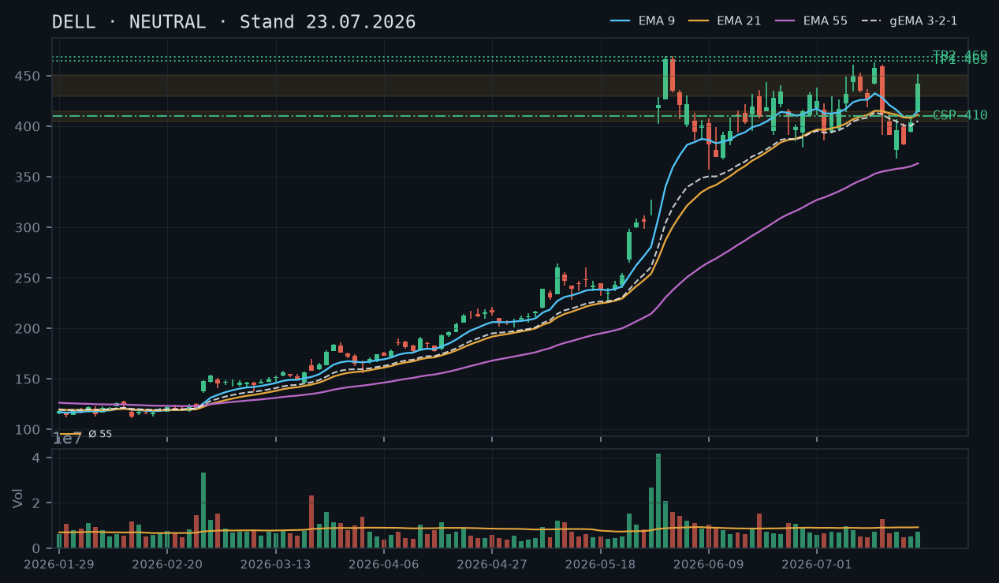
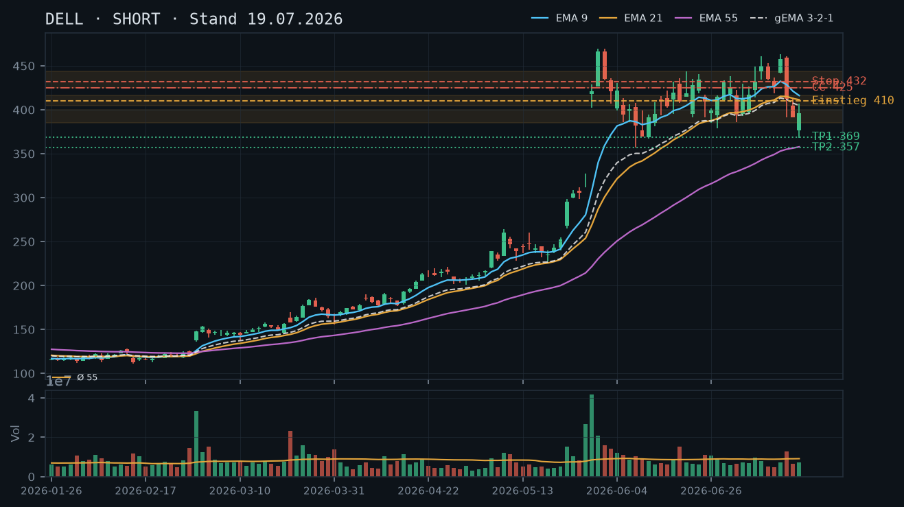
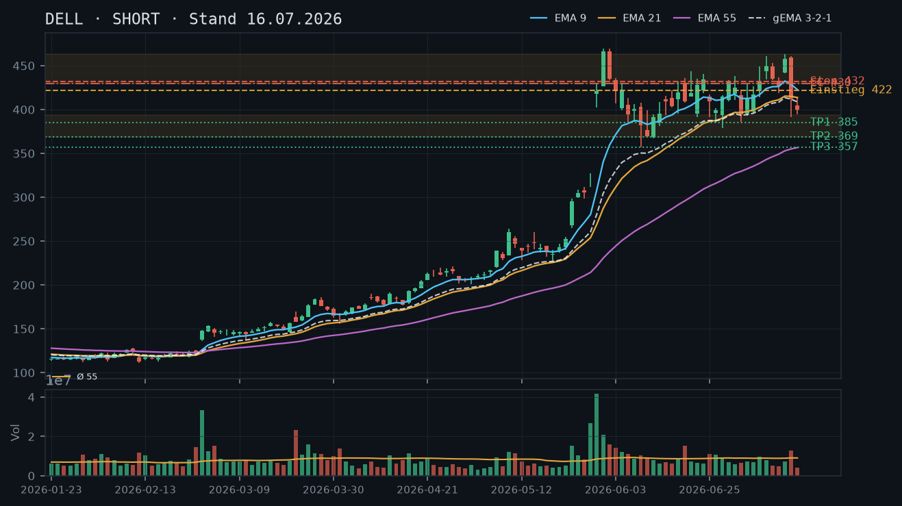
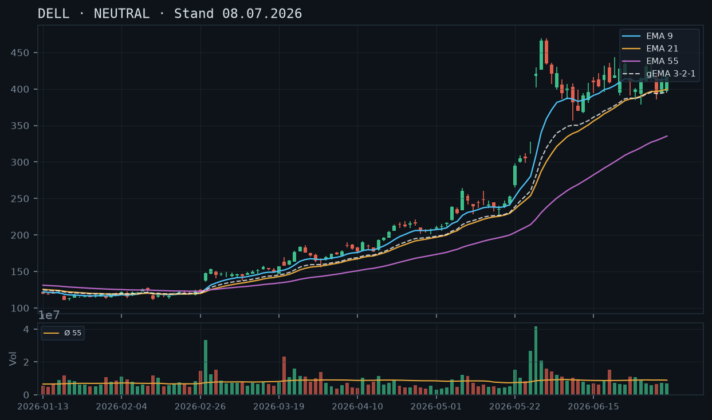

DELL hat am 22. Juli mit einem explosiven Anstieg von 404 auf 442 USD (rel. Volumen 0,78x – kein Volumen-Breakout) den EMA9 zurückerobert und die Widerstandszone 430–444 USD von unten angekratzt – der Short-Bias der Voranalysen wird damit kurzfristig herausgefordert, aber noch nicht gebrochen.

Der übergeordnete Trendrahmen bleibt komplex: DELL hat nach dem parabolischen Spike auf 469 USD (01.06.) eine volatile Konsolidierungsphase durchlaufen, die zwischen ~369 USD (Tief 17.07.) und ~461 USD (Hoch 14.07.) pendelt. Die Trendstruktur der letzten zwei Wochen zeigt tiefere Hochs (461 → 451 am 22.07.) und tiefere Tiefs (391 am 16.07. → 368 am 17.07.), was strukturell bearish bleibt. Der gestrige Kursanstieg auf 442 USD ist bemerkenswert, aber bei relativem Volumen von lediglich 0,78x (unter Durchschnitt) kein überzeugender Ausbruch. Die Zone 430–444 USD, die in den Voranalysen als mehrfach bestätigter Widerstand (Swing-Hochs 22.06., 09.07., 13.07.) identifiziert wurde, wird nun von unten getestet – dies ist der kritische Prüfstein.
Die letzte Kerze (22.07.) ist eine starke bullische Marubozu-ähnliche Kerze: Open 414,34, High 451,36, Low 413,77, Close 441,80 – ein Range von fast 38 USD mit kleinem Docht oben. Diese Kerze allein würde bullisches Momentum signalisieren, doch das unterdurchschnittliche Volumen (0,78x) schwächt die Überzeugungskraft erheblich. Im Kontext der Vorkerzen (20.07.: Bearish-Drückung auf 381, 21.07.: moderates Reversal auf 404) wirkt der heutige Sprung wie ein Squeeze oder News-getriebener Move ohne breite Marktbeteiligung – Vorsicht vor False-Breakout-Charakter.
Der EMA9 liegt bei 414,98, EMA21 bei 411,34 und EMA55 bei 363,21 – der gema_321-Verbund bei 405,14. Die gestrige Kerze hat den Kurs (441,80) deutlich über alle EMAs katapultiert, womit der zuvor beschriebene EMA9-als-Deckel-Mechanismus aus den Voranalysen technisch gebrochen wurde. Allerdings: Der EMA9 ist noch fallend (428,54 → 421,11 → 416,15 → 409,30 → 408,27 → 414,98), ein einziger Aufwärtstag dreht noch keine EMA-Struktur. EMA9 und EMA21 befinden sich in enger Kompression (414,98 vs. 411,34), was als Verdichtungsartefakt nach dem Crash zu werten ist. Der Abstand des aktuellen Kurses (441,80) zum gema_321 (405,14) beträgt ~9% – eine überdehnte Lage, die bei ausbleibendem Volumen-Follow-through Rückzugspotenzial birgt.
| Richtung | Kein Trade |
| Einstieg | Long über 451,50 USD (Stop-Buy über 22.07.-Hoch mit Volumen-Bestätigung) ODER Short unter 413,00 USD (Breakdown unter EMA9/gema_321-Cluster) |
| Stop | Long: 425,00 USD / Short: 445,00 USD |
| Ziel | Long: 465–469 USD (All-Time-High-Zone) / Short: 385–391 USD (Crash-Tiefs 16./17.07.) |
| CRV | Long ca. 1,5:1 (zu 465) / Short ca. 1,5:1 (zu 391) – beide erst nach klarem Trigger aktiv |
Der explosive Kursanstieg vom 22.07. auf 442 USD verändert das Stillhalter-Bild fundamental: Die zuvor empfohlenen Covered Calls bei 425–430 USD liegen nun ITM – diese Trades wären katastrophal verlaufen (Bestätigung: kein offener Trade laut IBKR-Snapshot). In der neuen Konstellation mit Kurs über allen EMAs und an der Widerstandszone 430–444 USD bietet sich ein Cash-Secured Put unterhalb der Unterstützungszone 410–415 USD (EMA9/gema_321-Cluster) als konservatives Stillhalter-Geschäft an. Ein Covered Call ist ohne Aktienbestand weiterhin ein Naked Call – angesichts der unklar gewordenen Richtung nicht empfohlen.
| Geschäft | Cash-Secured Put |
| Strike | 410.0 |
| Puffer | 7.1 % |
| Zone | EMA9 bei 414,98 + gema_321 bei 405,14 + Swing-Lows 20.07. (381) und 21.07. (393) als potenzielle Auffangzone 405–415 USD |
| Verfall bis | 2026-08-01 (9 Tage, nächster Standard-Freitag nach heute 23.07.) |
| Begründung | Strike 410 USD liegt unterhalb des aktuellen EMA9 (414,98 USD) und leicht oberhalb des gema_321 (405,14 USD) – die Zone 405–415 USD ist als erste Auffanglinie zu sehen, da hier EMA9 und gema_321 konvergieren und der Bereich als Sprungbrett für den gestrigen Anstieg diente (21.07.-Close 404,15 USD). Der Puffer zum aktuellen IBKR-Kurs (441,50 USD) beträgt ~7,1%. Andienungsszenario: Würde DELL bei 410 USD angedient, kauft man die Aktie knapp unterhalb des EMA9-Clusters – strukturell vertretbar, da die übergeordnete Trendstruktur (EMA55 bei 363 USD als langfristige Basis) einen tiefen Bestandskauf nicht erzwingt. KRITISCHE EINSCHRÄNKUNG: Der gestrige Anstieg ohne Volumen-Überzeugung (0,78x) kann auch ein Fehlausbruch sein – ein Rückfall unter 413 USD würde den Strike 410 rasch bedrohen. Der Anwender prüft in der Optionskette: Prämie im Verhältnis zum Puffer (Ziel mind. 0,4–0,5% des Kurswertes ≈ 1,75–2,20 USD Prämie), Bid-Ask-Spread, Open Interest bei 410/405-Strikes, sowie ob die implizite Volatilität nach dem jüngsten Volatilitäts-Event noch erhöht ist (begünstigt höhere Prämien). |
Bestand: Kein Aktienbestand, keine offenen Optionspositionen in DELL laut IBKR-Snapshot (Stand 11:37 Uhr, 23.07.2026). Die in der Analyse vom 16.07. empfohlene CC-Position bei Strike 430 USD (Verfall 25.07.) wäre durch den Kursanstieg auf 451 USD (Intraday-Hoch 22.07.) stark unter Druck geraten – der Nicht-Einstieg war rückblickend korrekt. Für neue CSP-Trades gilt: Kein Aktienbestand vorhanden, CSP ist cash-secured ohne Aktien-Verpflichtung möglich.
Die Voranalysen vom 16.07. und 19.07. hatten einen klaren Short-Bias mit Ziel 369/357 USD und den EMA9 als Deckelzone bei 416–422 USD identifiziert. Diese Einschätzung war bis zum 20.07. (Tief 381 USD, Close 381,88 USD) korrekt und profitabel. Der Reversal-Punkt wurde am 21.07. eingeleitet (Close 404 USD) und am 22.07. explosiv bestätigt (Close 441,80 USD).
Verwerfung des Short-Bias: Der Short-Bias aus den Voranalysen wird durch den Schlusskurs 441,80 USD oberhalb der gesamten EMA-Struktur und innerhalb der Widerstandszone 430–444 USD kurzfristig ausgehebelt. Die Trendstruktur ist jedoch nicht klar bullisch – tiefere Hochs (461 → 451 Intraday) und tiefere Tiefs (391 → 368) bleiben bestehen. Es liegt eine Neutralisierung vor, kein Trendwechsel.
Kritische Level:
Die Kerze vom 22.07. (O: 414,34 / H: 451,36 / L: 413,77 / C: 441,80) hat eine Körperlänge von ~27 USD und einen kleinen oberen Docht (~9,56 USD). Der Docht zeigt Verkaufsdruck bei 451 USD – genau an der oberen Widerstandszone. Das relative Volumen von 0,78x (unterdurchschnittlich) ist der entscheidende Schwachpunkt dieser Kerze. Vergleiche: Der ursprüngliche Crash am 15.07. (rel. Volumen 1,43x) und der Spike vom 29.05. (4,9x) hatten echte Marktbreite. Ein Kursanstieg von 28 USD bei 78% des Durchschnittsvolumens deutet auf Squeeze-Dynamik, Nachrichtenreaktion oder dünnes Orderbuch hin – nicht auf organisches Käuferinteresse.
Sequenz der letzten fünf Kerzen: Drei bearishe/neutrale Kerzen (17.–21.07.) mit Schlusskursen zwischen 381 und 404 USD, gefolgt von einem einzelnen bullischen Ausreißer. Kein Bestätigungsmuster (z.B. Morning Star mit Follow-through) vollständig ausgeprägt.
Aktuell: EMA9 = 414,98 / EMA21 = 411,34 / EMA55 = 363,21 / gema_321 = 405,14. Der Kurs (441,80 / IBKR 441,50) liegt über allen EMAs – erstmals seit dem Crash vom 15.07. Diese Konstellation wäre bullisch, wenn sie mit steigendem Volumen bestätigt würde. Der gema_321 (405,14 USD) fungiert als gewichteter Verbund-Mittelwert und liegt ~8,7% unter dem aktuellen Kurs – eine relative Überdehnung, die in volatilen Marktphasen häufig zu Rücksetzern führt.
EMA-Kompressions-Artefakt: EMA9 (414,98) und EMA21 (411,34) haben sich nach dem Crash stark komprimiert (Abstand nur 3,64 USD bei einem Kurs von 441 USD). Diese enge Bündelung nach einem Crash ist typisch und wird in den nächsten 2–3 Tagen auseinanderlaufen – entweder bullisches Golden Cross (EMA9 steigt über EMA21 mit Schwung) oder schnelle Rückkehr in die Kompressions-Range.
Setup A – Breakout Long (bevorzugt bei Volumen-Bestätigung):
Setup B – False-Breakout Short (bevorzugt bei Volumen-Ausbleiben):
Setup C – Abwarten: Bevorzugte Variante für heute, da kein klarer Trigger vorliegt. Der Kurs befindet sich in keinem validen One-Way-Muster.
Abgleich mit Voranalysen: Die CC-Empfehlungen bei 430 USD (16.07.) und 425 USD (19.07.) wurden laut IBKR-Snapshot nicht eingegangen – dieser Nicht-Einstieg war korrekt, da der Kurs am 22.07. intraday bis 451 USD lief und diese Strikes ITM geraten wären. Die heutige Analyse verwirft die CC-Empfehlung im aktuellen Kontext.
CSP Strike 410 USD – Detaillierte Herleitung:
Die Zone 405–415 USD ergibt sich aus drei Konfluenz-Faktoren: (1) EMA9 bei 414,98 USD als dynamische Unterstützung, (2) gema_321 bei 405,14 USD als gewichteter Verbund-Support, (3) der Close vom 21.07. bei 404,15 USD, der als Absprungbasis für den gestrigen Anstieg fungierte. Strike 410 USD liegt innerhalb dieser Konfluenzzone – der Puffer von 7,1% zum IBKR-Kurs (441,50 USD) ist komfortabel für einen 9-Tage-Zeitrahmen.
Andienungsszenario CSP 410 USD: Würde DELL bei oder unter 410 USD schließen und angedient werden, kauft man die Aktie leicht unterhalb des EMA9-Clusters. Der übergeordnete EMA55 (363 USD) und das 17.07.-Tief (368 USD) bieten weitere 11–12% Downside-Puffer bis zur nächsten strukturellen Auffangzone. Andienung ist strukturell vertretbar, aber nicht ohne Risiko bei einem Wiederaufnahme des Downtrends.
Roll-Trigger für den CSP: Fällt DELL unter 420 USD (nahe EMA9), sollte der Anwender die Position beobachten. Unter 413 USD (EMA9-Durchbruch) ist ein defensives Rollen auf tieferen Strike (z.B. 395 USD) oder Schließen zu erwägen. Unter 400 USD wäre ein Rollen oder Schließen zwingend, da die Konfluenzzone gebrochen wäre.
Warum kein Covered Call: Kein Aktienbestand vorhanden (IBKR-Snapshot: 0 Stück). Ein Naked Call bei unklar gewordener Richtung (möglicher Breakout auf 465–469 USD) hat bei unbegrenztem Aufwärtsrisiko ein inakzeptables Risikoprofil. Die Situation ist zu unsicher für einen Naked Short Call. CC = null ist konsistent mit der Positions- und Marktlage.
Was in der Optionskette zu prüfen ist:
DELL hält sich nach dem Bearish-Engulfing-Crash vom 15. Juli (412→391 USD in zwei Tagen) weiterhin unter dem fallenden EMA9/gema_321-Cluster – der Short-Bias aus der Voranalyse bleibt voll intakt, ein Covered Call bleibt das bevorzugte Stillhalter-Instrument.

Die Trendstruktur bestätigt die SHORT-Einschätzung vom 16.07. vollumfänglich: DELL hat nach dem parabolischen Spike auf 469 USD (01.06.) eine Serie tieferer Hochs gebildet – 469 → 461 → 452 → 413 → 407 USD. Das letzte markante Tief lag bei 391 USD (16.07.), das aktuelle Niveau liegt exakt auf diesem Level. Die kritische 400-USD-Marke fungiert nun als Widerstand von unten. Support-Zone 385–391 USD (mehrfach berührt am 05.06., 09.06., 26.06. und jetzt) ist der letzte Verteidigungswall vor dem nächsten Ziel bei ~369 USD (Juni-Tief 10.06.). Breakout darunter öffnet Raum bis 355–357 USD (EMA55 steigend).
Der 15. Juli lieferte ein textbook Bearish Engulfing (Open 459, Close 412, rel. Volumen 1.43x) – das war das entscheidende Reversal-Signal. Der 16. Juli schloss als roter Follow-Through bei 391 USD. Der 17. Juli zeigt eine Erholungskerze mit einem markanten Lower Shadow (Low 368 USD, Close 396 USD) auf erhöhtem Volumen (0.80x – leicht unter Schnitt), was kurzfristig ein Bounce-Potenzial andeutet, aber kein Trendwechsel-Signal darstellt – der Körper blieb unter 400 USD und dem EMA9. Der aktuelle Snapshot (391 USD, 0,0% Veränderung) deutet auf einen neutralen Tagesbeginn hin, der Bounce vom 17. Juli scheint sich nicht fortzusetzen.
EMA9 (416 USD) > EMA21 (411 USD) > gema_321 (405 USD) > EMA55 (358 USD) – der Kurs bei 391 USD liegt unterhalb aller kurzfristigen EMAs. Der EMA9 fällt von 432 auf 416 USD, der gema_321-Verbund dreht von 411 auf 405 USD nach unten – beide fungieren als dynamischer Deckel. Der Abstand Kurs zu EMA9 beträgt ~6,4%, was einen Bounce-Anreiz schafft, aber die Richtungsstruktur ist klar bearish. EMA55 bei 358 USD steigt weiterhin an und stellt das mittelfristige Ziel dar.
| Richtung | Short |
| Einstieg | 405,00–416,00 USD (Limit-Short beim Retest gema_321/EMA9-Cluster als Widerstand) |
| Stop | 432,00 USD (über dem 14.07.-Hoch und EMA9-Widerstandszone) |
| Ziel | 369,00 USD (Juni-Tief 10.06.) / 357,00 USD (EMA55-Projektion) |
| CRV | ca. 2.3 : 1 (Einstieg 410, Stop 432, Ziel 369) |
Der Short-Bias bleibt der dominante Kontext. Covered Calls oberhalb des EMA9/gema_321-Widerstands-Clusters (416–422 USD) sind das passende Instrument. Ein CSP ist weiterhin nicht empfehlenswert – die 385–391-USD-Zone ist zwar mehrfach berührt, aber noch nicht nachhaltig bestätigt als tragfähiger Support. Ein Breakdown darunter hätte Luft bis 369 USD. Qualität vor Vollständigkeit: CSP = null. Hinweis: Laut IBKR-Snapshot sind aktuell keine Aktien im Bestand – ein Covered Call ist daher technisch nicht möglich ohne Aktienposition. Das Setup wird als Naked Call ausgewiesen, was ein fundamental anderes Risikoprofil trägt (theoretisch unbegrenztes Verlustrisiko nach oben).
| Geschäft | Covered Call |
| Strike | 425.0 |
| Puffer | 8.6 % |
| Zone | EMA9-Widerstand 416 USD + Swing-Hochs 14./15.07. bei 461–463 USD, untere Widerstandszone 425–430 USD |
| Verfall bis | 2026-07-25 (6 Tage, nächster Standard-Freitag) |
| Begründung | Strike 425 USD liegt oberhalb des fallenden gema_321 (405 USD) und EMA9 (416 USD) und am unteren Rand der Widerstandszone 425–444 USD, die durch die Swing-Hochs vom 13.07. (437 USD), 14.07. (463 USD) und die frühere Konsolidierung definiert ist. Der Puffer von ~8,6% zum aktuellen Kurs (391 USD) ist komfortabel. WICHTIGER HINWEIS: Laut IBKR-Snapshot besteht kein Aktienbestand (0 Stück). Dieser Call wäre ein NAKED CALL mit unbegrenztem Aufwärtsrisiko – nur für erfahrene Optionshändler mit entsprechendem Margin-Account und klarem Stop geeignet. Der Anwender prüft in der Optionskette: Prämie vs. Puffer (Ziel mind. 0,4–0,5% des Kurswertes), Bid-Ask-Spread, Open Interest bei 425/430-Strikes, implizite Volatilität nach dem jüngsten Crash (erhöhte IV begünstigt höhere Prämien). |
Bestand: Kein Aktienbestand, keine offenen Optionspositionen in DELL laut IBKR-Snapshot (Stand 12:09 Uhr). Ein eventuell zuvor empfohlener CC bei 430 USD (Analyse 16.07.) wurde offenbar nicht eingegangen oder ist bereits verfallen/geschlossen. Für neue Trades gilt: Ohne Aktienbestand ist jeder Short-Call ein Naked Call – Margin-Anforderungen und Risikoprofil entsprechend berücksichtigen.
Die Analyse vom 08.07. beschrieb eine Konsolidierung zwischen 385 und 444 USD ohne klares Momentum – diese Einschätzung ist nun überholt. Der Breakout nach oben bis 463 USD am 14.07. war eine Bullenfalle, gefolgt vom katastrophalen Bearish-Engulfing am 15.07. Die Analyse vom 16.07. (SHORT-Bias, EMA9 als Deckel) ist vollständig bestätigt: Der EMA9 bei damals 422 USD hat als Widerstand funktioniert, der Kurs ist nicht mehr darüber zurückgekehrt.
Aktuelle Hochs-/Tiefs-Struktur (absteigende Sequenz): 469 USD (01.06.) → 461 USD (15.07.) → 413 USD (16.07.) → 407 USD (17.07.-High). Das zeigt eine klare Abfolge tieferer Hochs. Auf der Tief-Seite: 369 USD (10.06.) → 378 USD (17.07.-Low) – hier noch keine tieferen Tiefs bestätigt, was ein leichtes Gegenargument ist. Die 385–391-USD-Zone hat nun vier Tests hinter sich (05.06. Low 386, 09.06. Low 357→Rebound, 26.06. Low 385, 16.07. Low 391, 17.07. Low 368). Der Test am 17.07. bei 368 USD mit Erholung auf 396 USD ist interessant: Kurzfristig hält die Zone, strukturell ist sie aber fragil.
Key Levels:
Die letzten vier Kerzen erzählen eine klare Geschichte:
Die EMA-Reihenfolge ist eindeutig bearish für den Kurs: EMA9 (416) > EMA21 (411) > gema_321 (405) > Kurs (391) >> EMA55 (358). Alle kurzfristigen EMAs fallen: EMA9 war am 14.07. noch bei 432, heute bei 416 – eine Beschleunigung des Abwärtsdrucks im EMA9. Der gema_321-Verbund (gewichtetes Mittel) bei 405 USD ist der präziseste Widerstand – hier sollte ein Retest abgewartet werden.
Volumen-Highlights: Der 28.05. (rel. Vol. 3.38x) und 29.05. (4.90x) markierten den Earnings-Spike-Beginn. Der Höhepunkt am 01.06. (2.37x) und der Absturz am 15.07. (1.43x) sind die institutionell relevanten Sessions. Die Folgetage zeigen normalisiertes Volumen (0.71–0.80x), was auf eine Pause hindeutet – kein panisches Selling, aber auch kein Kaufinteresse sichtbar.
Setup A – Bevorzugt: Retest-Short beim gema_321-Cluster
Setup B – Aggressiv: Breakdown-Short unter 385 USD
Setup C – Konträr: Long-Bounce bei 369–375 USD
CSP – Warum null: Die 385–391-USD-Zone ist zwar vier Mal berührt worden, aber der Intraday-Spike am 17.07. auf 368 USD (unter dem Juni-Tief von 369 USD) zeigt, dass die Zone keine hohe Robustheit besitzt. Ein CSP bei z.B. 375 USD (unter der Zone) würde nur ~4% Puffer bieten und in einem potenziellen Breakdown-Szenario direkt bedroht. Der nächste wirklich tragfähige Support (EMA55 bei 357 USD) ist zu weit weg für einen attraktiven CSP mit vernünftiger Prämie bei kurzfristiger Laufzeit. CSP-Qualitätsfilter: nicht bestanden.
CC – Zonen-Herleitung Strike 425 USD:
Der Strike wird wie folgt technisch hergeleitet:
Andienungsszenario: Würde DELL bis 425 USD steigen und die Option angedient, befände man sich exakt im EMA9-Widerstandsbereich. Ohne Aktienbestand ist das jedoch ein Naked Call – bei Andienung müsste man 100 Aktien je Kontrakt zu 425 USD liefern, was einen unmittelbaren Short-Sale oder Rückkauf erfordert. Das Risiko nach oben ist theoretisch unbegrenzt.
Roll-Trigger für CC 425: Sollte DELL über 416 USD (EMA9) schließen UND ein Tagesvolumen über 1.3x Durchschnitt zeigen, ist sofortiges Schließen oder Rollen auf Strike 440–445 USD (Verfall selbe Woche oder +7 Tage) angeraten. Bei einem Close über 432 USD ist die Short-These strukturell in Frage gestellt – Position schließen.
Was in der Optionskette zu prüfen ist:
Abgleich mit Voranalyse 16.07. – CC bei 430 USD: Der damals empfohlene CC bei 430 USD war technisch korrekt hergeleitet. Da laut IBKR-Snapshot keine Optionspositionen offen sind, wurde er entweder nicht eingegangen oder ist inzwischen verfallen/geschlossen. Der Strike 430 bleibt technisch valide als Alternative zu 425 USD – 430 gibt noch mehr Puffer (~10%), liefert aber geringere Prämie. Für den neuen Verfall 25.07. ist 425 USD der bevorzugte Strike (bessere Prämie/Puffer-Balance), 430 USD als konservativere Alternative.
DELL hat nach dem Reversal-Tag am 15. Juli (Bearish Engulfing von 461 auf 413 USD, rel. Volumen 1.43x) und dem heutigen Follow-Through-Close bei 399 USD die kritische 400-USD-Marke unterschritten – der kurzfristige Bias ist klar Short, solange der EMA9 bei 422 USD als Deckel fungiert.

Die Trendstruktur von DELL ist nach dem parabolischen Run bis 469 USD (01. Juni) in eine ausgeprägte Verteilungsphase übergegangen. Das Range-Hoch vom 22. Juni bei 444 USD und das All-Time-High vom 01. Juni bei 469 USD bilden den oberen Deckel. Die frühere Analyse vom 08.07. identifizierte korrekt die Konsolidierung zwischen ~385 und ~444 USD – diese Range ist nun nach unten aufgebrochen. Der heutige Close bei 399 USD liegt unterhalb der psychologischen 400-USD-Marke und unterhalb des EMA9 (422 USD), was eine kurzfristige Trendumkehr nach unten signalisiert. Nächste relevante Supports liegen bei ~385 USD (June-Swing-Low vom 05.06.) sowie ~369 USD (Juni-Tief vom 10.06.).
Der 15. Juli lieferte eine klassische Bearish Engulfing-Kerze: Eröffnung bei 459 USD, Tageshoch 461 USD, dann Absturz auf Tief 391 USD und Close 413 USD – eine Tagesrange von 70 USD bei rel. Volumen 1.43x (überdurchschnittlich). Das ist ein klares Reversal-Signal nach dem letzten Push auf 463 USD am 14. Juli. Der heutige 16. Juli bestätigt mit einem schwachen Close bei 399 USD (Eröffnung 404, Hoch 414, Tief 394) die bearishe Fortsetzung, wenngleich das Volumen mit rel. 0.47x deutlich unterdurchschnittlich ist – kein Panik-Selling, sondern kontrollierter Abbau.
Die EMA-Konstellation ist nach dem heutigen Tag erstmals klar bearish gedreht: EMA9 (422,71) > EMA21 (413,62) > EMA55 (356,67) – die Reihenfolge ist noch bullish geordnet, aber der Kurs bei 399 USD liegt nun unterhalb aller drei EMAs. Der gema_321 bei 408,67 USD fungiert ebenfalls als dynamischer Widerstand über dem Kurs. EMA9 und EMA21 nähern sich an (Differenz ~9 USD vs. ~21 USD vor einer Woche), was einen möglichen Bearish Cross des EMA9 unter den EMA21 ankündigt – ein Signal, das den Short-Bias strukturell festigen würde. Die Abstandsanalyse: Kurs ist 5,5% unter EMA9, 3,6% unter EMA21 und 11,9% über EMA55 – der EMA55 bei 357 USD bleibt eine weit entfernte, aber relevante Zielzone.
| Richtung | Short |
| Einstieg | 422,00 USD (Limit-Short beim Retest EMA9/gema_321-Cluster als Widerstand) |
| Stop | 432,00 USD (über dem 14.07.-Close und EMA9-Region) |
| Ziel | 369,00 USD (Juni-Tief 10.06.) / 355,00 USD (EMA55) |
| CRV | ca. 2.5 : 1 (zu Ziel 369 USD) |
Nach dem Bearish Engulfing und dem Breakdown unter 400 USD ist die Lage für Covered Calls attraktiv: Der Kurs liegt unter allen EMAs, der Widerstandscluster EMA9/gema_321 bei 408–423 USD bietet natürliche Strike-Unterstützung für CCs. Ein CSP ist in dieser Phase nicht sinnvoll – kein tragfähiger Support ist bestätigt worden, und das nächste potenzielle Niveau (385 USD) wurde noch nicht gehalten. Qualität vor Vollständigkeit: CSP = null.
| Geschäft | Covered Call |
| Strike | 430.0 |
| Puffer | 7.7 % |
| Zone | EMA9-Widerstand ~422 USD + Range-Deckel 430–444 USD (bestätigt durch Swing-Highs 22.06., 09.07., 14.07.) |
| Verfall bis | 2026-07-25 (9 Tage, nächster Standard-Freitag nach heute) |
| Begründung | Strike 430 USD liegt oberhalb des EMA9-Clusters (422 USD) und am unteren Rand der Widerstandszone 430–444 USD, die durch mindestens drei Hochs (444 am 22.06., 450 am 09.07., 463 am 14.07.) definiert ist. Der Puffer von ~7,7% zum aktuellen Close (399 USD) gibt ausreichend Luft. Im Andienungsszenario: Würde DELL bei 430 USD angedient, liegt man am oberen EMA-Widerstand – strukturell vertretbar für einen Bestandshalter, der DELL langfristig halten will. Der Anwender prüft in der Optionskette: Prämie vs. Puffer-Verhältnis (Ziel: mind. 0,5% des Kurswertes), Bid-Ask-Spread, Open Interest im 430/435-Strike-Bereich. |
Die Analyse vom 08.07. postulierte eine neutrale Konsolidierungsphase zwischen ~385 und ~444 USD und skizzierte einen Short-Trigger erst unter 385 USD. Dieses Bild muss heute teilweise verworfen werden: DELL hat zwar die 444-USD-Marke am 09.07. (450 USD) und 14.07. (463 USD) kurzzeitig überschritten, aber die Breakout-Versuche scheiterten jeweils intraday. Das parabolische High vom 01.06. bei 469 USD blieb unangetastet. Der heutige Close bei 399 USD zeigt, dass die Range jetzt nach unten bricht – die Short-Seite ist aktiviert, ohne dass der ursprüngliche Trigger bei 385 USD abgewartet werden muss, da der Breakdown strukturell bereits durch den Reversal-Tag (15.07.) eingeleitet wurde.
DELL befindet sich im übergeordneten Kontext eines explosiven Aufwärtstrends (von ~144 USD im März auf 469 USD am 01.06. = +225%). Diese Bewegung entstand in zwei Beschleunigungsphasen: Erstens der Anstieg auf ~265 USD bis Anfang Mai (getrieben durch EPS-Reaktion am 06.05. mit rel. Volumen 1.11x, dann Spike auf 260 USD am 08.05. mit 1.45x), zweitens der extreme Gap-Up am 29.05. (rel. Volumen 4.9x! – das signifikanteste Volumen-Event in den 90 Kerzen) von ~317 auf 421 USD Open, gefolgt vom Blow-Off-Top am 01.06. (2.37x).
Widerstandscluster (oben):
Supportzonen (unten):
14. Juli (Bullish Candle): Open 441, High 463, Low 441, Close 457 – rel. Volumen 0.81x. Anstieg auf 463 USD, aber unterdurchschnittliches Volumen. Kein Überzeugungskauf – Distribution in Stärke.
15. Juli (Bearish Engulfing / Key Reversal): Open 459, High 461, Low 391, Close 412 – rel. Volumen 1.43x. Diese Kerze engulfed die gesamte Vortagskerze und schließt nahe dem Tagestiefs. Das Intraday-Tief bei 391 USD testete kurzzeitig die 385–394-USD-Support-Zone. Die Kerze ist das stärkste Einzelsignal für eine Trendwende kurzfristig.
16. Juli (Bestätigung): Open 404, High 413, Low 394, Close 399 – rel. Volumen 0.47x. Schwaches Volumen beim Follow-Through ist typisch für einen 'controlled sell-down' ohne Panik. Kein Reversal-Signal nach oben sichtbar.
Die Reihenfolge EMA9 (422) > EMA21 (413) > EMA55 (357) ist nominell noch bullish, aber der Kurs (399 USD) liegt unterhalb aller drei EMAs – das ist eine klare Warnung. Der gema_321 bei 408 USD (gewichteter Verbund) liegt ebenfalls über dem Kurs und wirkt als dynamischer Deckel. Bemerkenswert: EMA9 und EMA21 konvergieren rapide (Differenz heute ~9 USD vs. ~20 USD vor drei Wochen). Ein Bearish Cross EMA9 unter EMA21 ist innerhalb von 2–3 Handelstagen realistisch – dies wäre ein strukturelles Short-Signal und Roll-Trigger für bestehende Covered-Call-Positionen nach unten.
Setup A – Short bei Retest (bevorzugt):
Setup B – Short bei Momentum-Breakdown:
Setup C – Long (kontraindikatorisch, nur bei Reversal-Bestätigung): Kein aktives Setup. Erst bei einem überzeugenden Close über 430 USD mit Volumen > 1.5x Schnitt wäre ein Long-Retest Richtung 444/460 USD denkbar. Derzeit kein Trigger.
Covered Call auf DELL – Strike 430 USD, Verfall 25.07.2026 (9 Tage):
Zonen-Herleitung: Der Strike 430 USD liegt am Schnittpunkt von drei Widerstandsebenen: (1) dem EMA9 bei 422 USD, der als dynamischer Deckel fungiert, (2) dem unteren Ende der Range-Widerstandszone 430–444 USD (drei bestätigte Hochs: 22.06. bei 444, 09.07. bei 450, 14.07. bei 463), und (3) dem gema_321-Verbund bei 408 USD, der die Zone von unten flankiert. Der Kurs muss also ~7,7% zulegen und dabei gleich drei Schichten technischen Widerstands überwinden, um den Strike zu erreichen.
Andienungsszenario: Würde DELL bei 430 USD per 25.07. angedient (d.h. Aktie wird zum Strike abgerufen), geschieht dies im oberen Bereich des EMA-Widerstands. Für einen Langzeit-Halter, der DELL im Schnitt unter 400 USD trägt, wäre das ein akzeptabler Abgabepreis. Für einen Halter mit Einstand über 430 USD ist das CC nicht geeignet – hier wäre ein höherer Strike (445–450 USD) zu evaluieren, der aber derzeit weniger Prämie bieten wird.
Roll-Trigger: Wenn DELL sich innerhalb von 3–4 Tagen wieder über 420 USD stabilisiert und der EMA9 als Support zurückerobert wird (Close > EMA9), sollte die CC-Position defensiv auf 440–445 USD gerollt oder geschlossen werden, um nicht in eine potenzielle Erholungsrally hineingeandient zu werden.
Was in der Optionskette zu prüfen ist: (1) Prämie des 430-USD-Calls: Ziel mind. 4–6 USD (1,0–1,5% des aktuellen Kurswertes für 9 Tage). (2) Bid-Ask-Spread: Bei DELL normalerweise eng, aber bei erhöhter IV nach dem Sell-off ggf. weiter – Mid-Limit order nutzen. (3) Open Interest / Liquidität am 430-Strike: DELL hat in der Regel gute Optionsliquidität an runden 5er-Strikes. (4) Implied Volatility: Nach einem Sell-off ist IV erhöht – das ist für den Stillhalter günstig (höhere Prämien). Den Vega-Effekt im Auge behalten: fällt die IV zurück, profitiert der Short-Call doppelt (Zeitwert + IV-Rückgang).
CSP – warum null: Der Verkauf eines Cash-Secured Puts setzt voraus, dass man DELL zu einem bestimmten Strike gerne kaufen würde und dieser Strike an einer validen, mehrfach bestätigten Unterstützung liegt. Die Zone bei 385–394 USD wurde heute erst das erste Mal getestet – ein einzelner Test ist nach den Logik-Prinzipien kein bestätigter Support. Das Juni-Tief bei 369 USD (10.06.) wäre technisch interessanter für einen CSP-Strike (z.B. 360–365 USD), aber der Puffer von ~10% über 12 Tage macht die erzielbaren Prämien in diesem Bereich wahrscheinlich unattraktiv. Daher: Qualität vor Vollständigkeit – kein CSP in dieser Marktphase.
DELL befindet sich nach dem parabolischen Anstieg bis 469 USD in einer volatilen Konsolidierungsphase zwischen ~385 und ~444 USD – ohne klares Momentum fehlt ein überzeugender Einstieg.

Nach dem massiven Impuls von ~120 USD (Feb) auf ~469 USD (Juni) konsolidiert DELL seit ca. 6 Wochen seitwärts im Bereich 385–444 USD. Die Hochs (469, 444, 440, 438) bilden eine absteigende Linie, die Tiefs (385, 391, 378) zeigen ebenfalls eine leicht fallende Tendenz – kurzfristig eine komprimierende Struktur mit bearishem Bias. Wichtige Supports: 385–391 USD (mehrfach getestet), 370 USD (Swing-Low 10. Juni). Entscheidender Widerstand: 440–444 USD.
Die letzten drei Kerzen zeigen ein gemischtes Bild: Am 01.07. eine bullische Kerze bis 438 USD, dann am 02.07. ein starker Rücksetzer (Hochpunkt 422, Schluss 394 – ein Bearish Engulfing/Inside-Day-Breakdown). Am 06.07. Erholung auf 411, am 07.07. weiterer Anstieg auf 417 mit langen Oberschatten – keine klare Richtungsentscheidung. Das Muster deutet auf Unsicherheit und fehlende Käuferstärke hin.
EMA9 (413) liegt knapp über EMA21 (399) und deutlich über EMA55 (335) – die Reihenfolge ist bullisch. Der gema_321 bei 395 verläuft unterhalb des aktuellen Kurses (417), was leicht positiv ist. Allerdings hat der EMA9 zuletzt abgeflacht und der Kurs pendelt um ihn herum, was auf Trendlosigkeit im kurzfristigen Bereich hinweist. Der EMA55 steigt stark an (von 265 auf 335 in 6 Wochen) und stützt die langfristig bullische Struktur.
| Richtung | Kein Trade |
| Einstieg | Long über 444 USD (Breakout über Widerstandszone) oder Short unter 385 USD (Breakdown Support) |
| Stop | Long: 428 USD / Short: 400 USD |
| Ziel | Long: 470–480 USD / Short: 355–360 USD |
| CRV | Long ca. 1.7:1 / Short ca. 2.8:1 – beide erst nach Trigger aktiv |
DELL hat seit Februar 2026 eine außergewöhnliche Rallye vollzogen: Vom Tief bei ~120 USD (26.02.) explodierte die Aktie auf ein Hoch von ~469 USD (01.06.), getrieben durch mehrere Earnings-/News-getriebene Gap-ups (z.B. +22% am 27.02., +22% am 29.05., +10% am 01.06.). Seitdem befindet sich die Aktie in einer ca. 6-wöchigen Konsolidierungsphase.
Wichtige Kursmarken:
Die Trendstruktur im Kurzfrist-Bereich zeigt ein klassisches symmetrisches Dreieck bzw. eine absteigende Keilformation mit komprimierenden Hochs und relativ stabilen (leicht fallenden) Tiefs. Ein Ausbruch nach oben oder unten ist fällig.
Die jüngsten Kerzen im Detail:
Insgesamt zeigen die letzten Kerzen ein klassisches Pennant/Wedge-Muster innerhalb der Konsolidierung. Kein klares bullisches oder bearisches Signal – der Markt wartet auf einen Katalysator.
Aktuelle EMA-Werte (07.07.): EMA9 = 413.49 | EMA21 = 399.62 | EMA55 = 335.49 | gema_321 = 395.87
Reihenfolge: EMA9 > EMA21 > EMA55 – bullische Staffelung. Der Kurs (417) liegt über EMA9, was kurzfristig positiv ist.
Abstände: EMA9 zum Kurs: +3.5 USD (sehr eng, kaum Impuls). EMA21 liegt bei 399, EMA55 bei 335 – strukturelle Unterstützungen in beiden Fällen deutlich darunter.
gema_321 bei 395.87: Der gewichtete EMA-Verbund liegt unter dem aktuellen Kurs, was grundsätzlich positiv ist. Allerdings hat der gema_321 in den letzten 10 Tagen kaum zugelegt (von 387 auf 395) – die Dynamik flacht ab.
EMA9 Verlauf: Hat nach dem steilen Anstieg von Juni (304 → 415) ebenfalls abgeflacht und pendelt seit dem 10.06. zwischen 383–417. EMA21 steigt noch kontinuierlich an (~3-4 USD/Tag). Dies spricht für eine Beruhigung des Aufwärtstrends, aber kein Trendbruch.
Volumen-Highlights: Besonders auffällig waren rel_volumen 4.90 am 29.05. (Earnings-Gap +33%), 2.37 am 01.06., 3.38 am 28.05. und 2.05 am 22.05. – allesamt distributiv/impulsiv. Seitdem ist das Volumen deutlich gesunken (0.67–1.26), was die Konsolidierungsphase bestätigt.
Fazit: Die beste Risk/Reward-Situation entsteht bei einem klaren Ausbruch (A oder B). Aktuell empfiehlt sich Abwarten und Beobachten der Konsolidierungszone 385–444 USD. Der langfristige Trend bleibt bullisch – ein Pullback in Richtung 355–370 wäre eine strategische Kaufgelegenheit mit sehr gutem CRV.